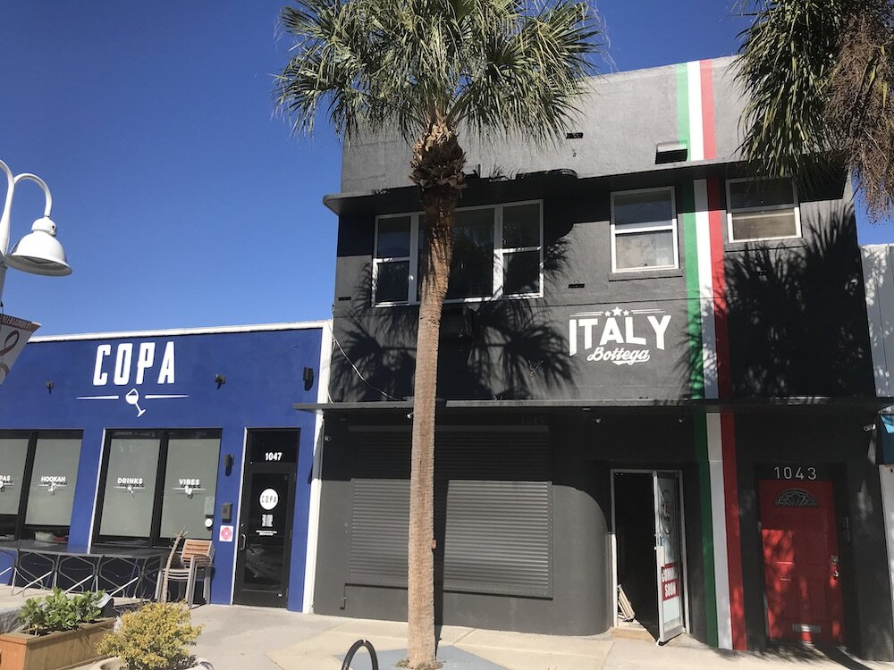

Don't us get wrong, Central Avenue in St. Pete is a culinary destination in itself, but there's tons of eateries worth exploring in the surrounding area. Here are a few of our favorite Pinellas County restaurants.
St. Pete’s restaurant scene is enjoying a renaissance, with new, locally owned concepts popping up at a dizzying pace. They run a wide culinary gamut, from local seafood to upscale Asian fusion to farm-to-table pizza.